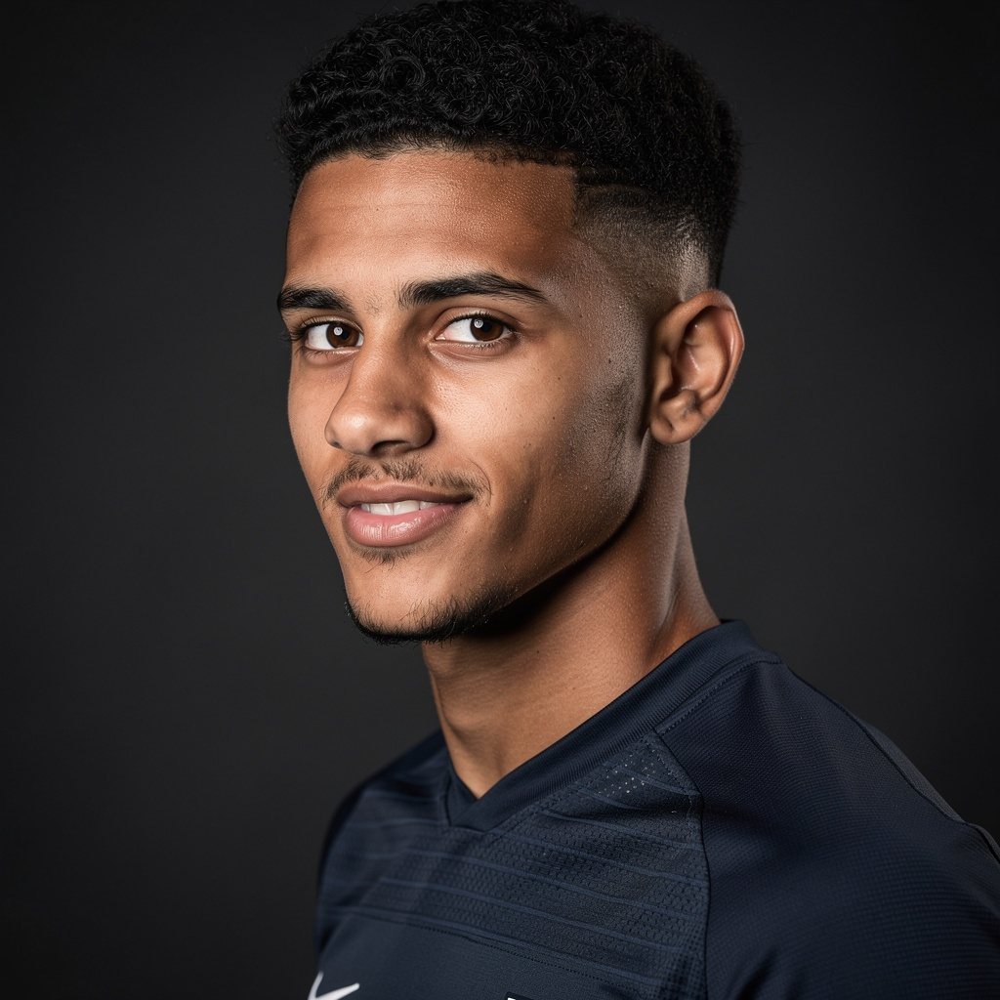
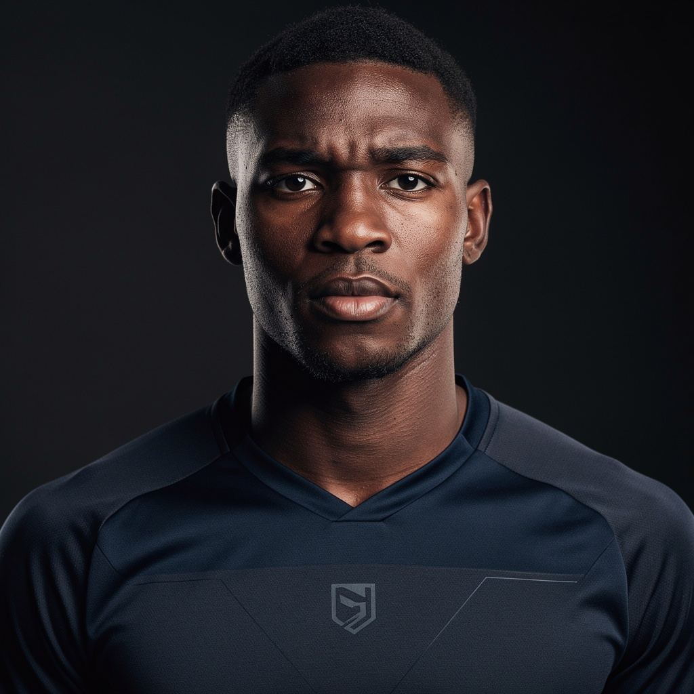
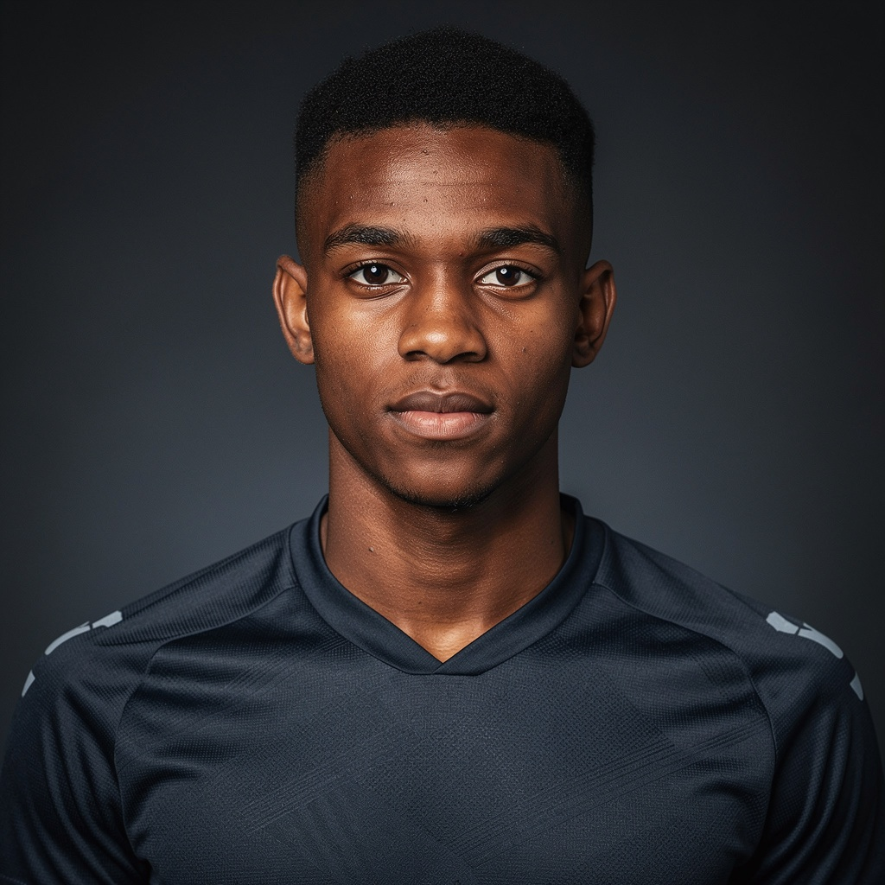
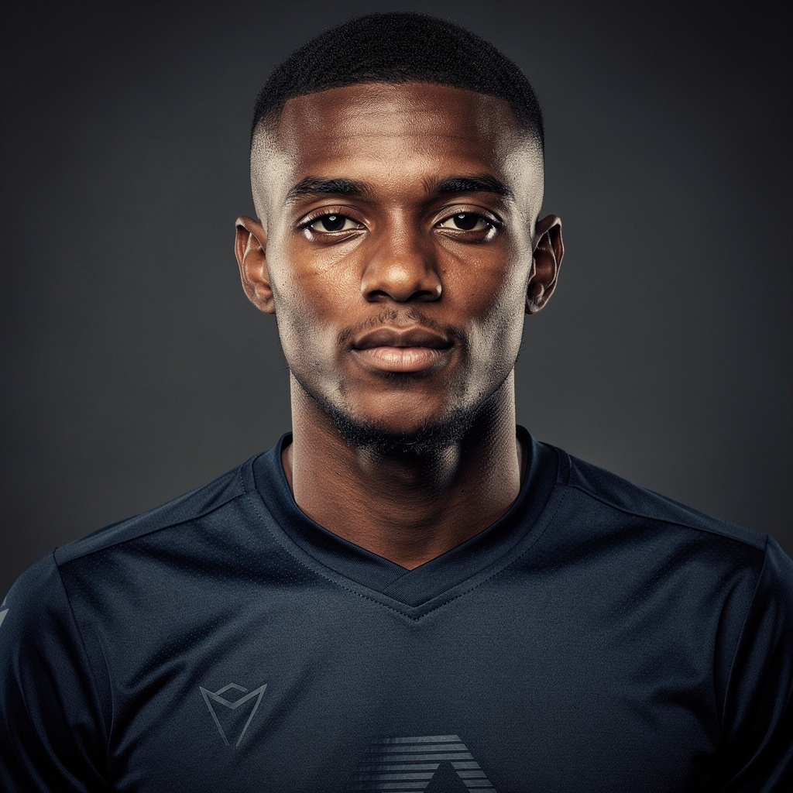
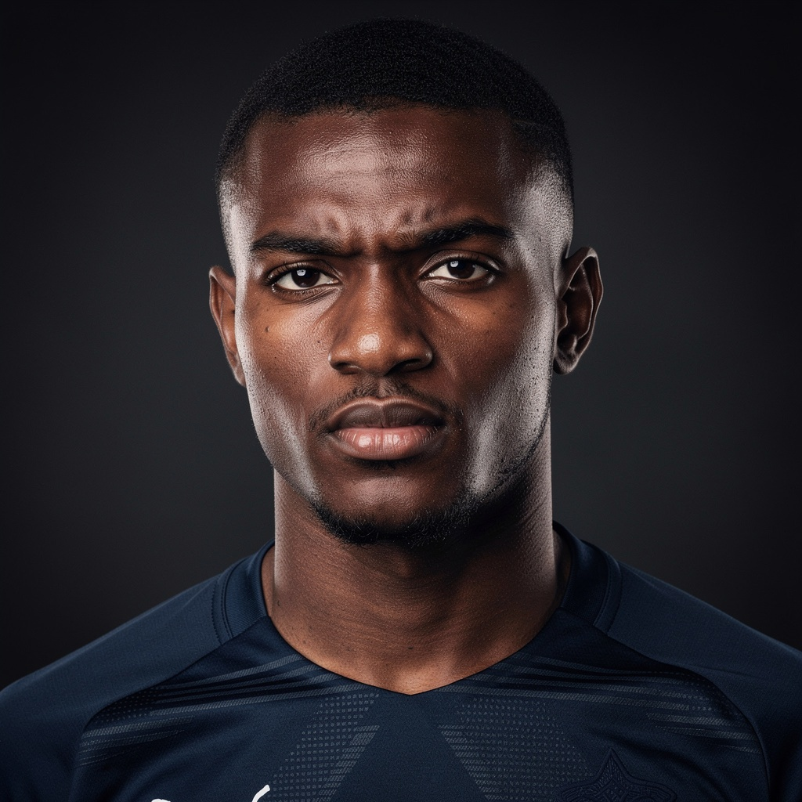
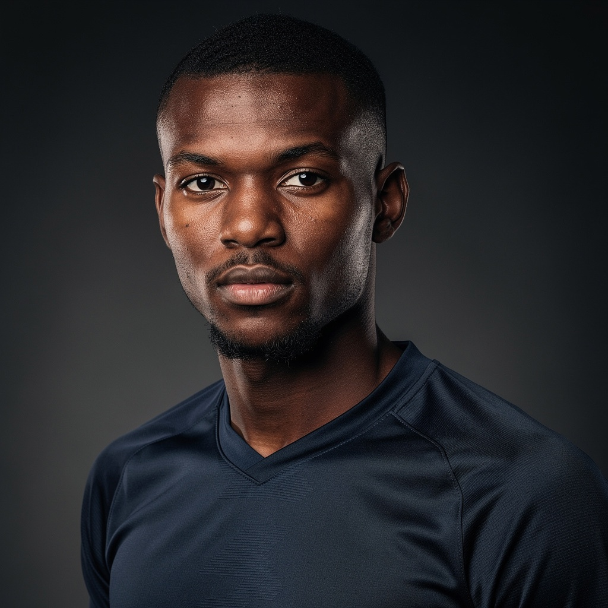

ShadowScout surfaces data-first scouting signals from undertracked leagues so scouts and agents can decide which players deserve video review now.
Starting with 🇫🇷 France Ligue 2



ShadowScout solves that problem. Each signal cycle scans Ligue 2 player data and identifies signals using role-specific metrics, minutes thresholds, performance trends, age context, and statistical acceleration.
The result is a curated scouting intelligence board, not another analytics platform.
Four steps from raw Ligue 2 data to actionable discovery signals.
Match and player data from Ligue 2 is collected and standardized across all clubs.
Players are evaluated using role-specific metrics — interceptions for DMs, aerial win rates for CBs, xG trends for forwards.
Players crossing defined thresholds generate signals. Signals are ranked and tracked across monthly cycles.
Signals appear on the ShadowScout board and in the monthly brief. Each signal answers: Why is this player surfacing right now?
Everything you need to identify players earlier and act faster.
The ShadowScout dashboard shows top players surfacing in each role, rising and falling signals, role-based leaderboards, movement across signal cycles, and discovery shortlists.
Each month ShadowScout publishes the Ligue 2 Signal Brief with role leaders, rising players, signal movers, editorial insights, and the 10 players worth reviewing now.
Players are evaluated inside defined role categories. Each role board highlights players whose statistical signals match that profile.



Real signal cards from the March 2026 cycle.
"Progressive carry rate in the top 5% of Ligue 2 CMs over the last 8 matches, with pass completion above 88%."
"Top Ligue 2 xG per 90 among under-23 forwards. Box entry rate rising across last 4 matches."
"Aerial duel success rate above 72% for 6 consecutive matches. Highest among tracked Ligue 2 CBs."
ShadowScout surfaces signals. You choose which players to watch video on.
It is a curated signal board, not a platform to search arbitrary player stats.
Signals require human judgment. ShadowScout tells you who to consider, not who to sign.
ShadowScout helps you decide where to look first, not make final recruitment decisions.
Ligue 2 is one of Europe's strongest development leagues. Many players emerge here before moving to bigger competitions — but the league is large enough that discovering players early requires serious filtering.
ShadowScout focuses on surfacing signals inside this league first, before expanding to other undertracked competitions.
ShadowScout is built for professionals who need to find players faster.
Get curated shortlists instead of scanning hundreds of players manually.
Identify players early — before the wider market reacts to their data.
Role-specific signal boards aligned with the positions you need to fill.
Access intelligence that was previously only available to well-funded recruitment departments.
ShadowScout does not replace scouting — it helps you decide where to look first.
A premium scouting intelligence tool, not a mass-market product.
ShadowScout is preparing its first Ligue 2 Signal Cycle. Join the early access list and receive the first Signal Brief when it launches.